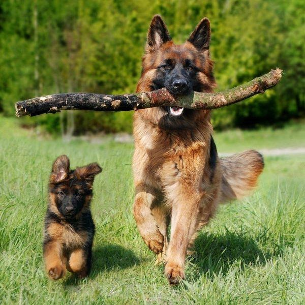
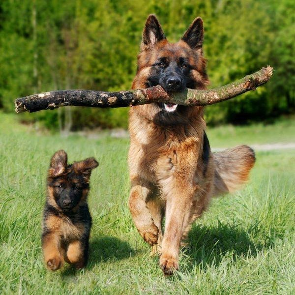

Надзвичайно розумні тіа відважні на службі, кінозірки та просто улюбленці мільйонів людей у всьому світі — вівчарки є найпоширенішою породною групою. Сама назва говорить про їхнє первинне призначення — випасання овець. У сучасному світі ці собаки стали нашими напарниками та компаньйонами. Розказуємо докладно, які бувають різновиди вівчарок.
Ось п’ять рис, якими славляться ці тварини:
- Розум. Вівчарки легко піддаються навчанню і правильно виконують команди власника.
- Витривалість. Вони доволі швидко долають значні відстані, переслідуючи зловмисника.
- Терпеливість.Можуть довго перебувати на пасовищі поряд зі стадом овець, кіз та іншої худоби і бути для них надійними захисниками.
- Сміливість. Безстрашно захищають людей і тварин від хижаків чи злодіїв.
- Працездатність.Вівчарка може майже цілодобово виконувати різні доручення людини.
Історія вівчарок
Найвідомішою у цій породній групі є німецька вівчарка. Їх виводили для охоронної служби на пасовищах. Селекційні роботи вели у скандинавських країнах. Припускають, що під час формування породи підмішували кров індійських вовків. Одним із перших представників німецької вівчарки був пес на прізвисько Грайф. У 1899 році породу офіційно представили на світовій виставці собак.
Не менш популярною є кавказька вівчарка. Її батьківщиною є територія, прилегла до Кавказького хребта. Формування породи обумовлене протягом століть природним відбором для захисту осель і домашньої худоби. А ось селекцію провели у СРСР ще у 20-х роках двадцятого століття. Згідно з іншою версією походження, предками цих собак є тибетські доги.
Східноєвропейську вівчарку вивели для служби в армії та господарських потреб. Вона може бути поводирем для незрячих і слабозорих людей. Вирощувати цих собак почали у 1930 році. Східноєвропейську вівчарку використовують відомчі служби для охорони різноманітних об’єктів, пошуку вибухівки і наркотиків, а також для упіймання злочинців.
Бельгійська вівчарка. У 1891 році бельгійський ветеринар почав експеримент з виведення національної породи вівчарок для роботи на пасовищах. Для цього він взяв собак одного типу зі стоячими вухами, але з різним забарвленням і шерстю. А вже на початку двадцятого століття було встановлено стандарти: довга шерсть і сіро-попелясте забарвлення (лакенуа), коротка шерсть вугільного або корично-жовтого кольору (малінуа), чорне забарвлення і середньої довжини шерсть (грюндаль).
Швейцарська біла вівчарка. У 70-х роках до Швейцарії завезли білу вівчарку. Прабатьком сучасних собак цієї породи став американський пес. Кількість тварин поступово збільшувалася, і тоді розпочалося їхнє цілеспрямоване розведення.
Особливості вівчарок
Спочатку цих собак розводили як захисників стада від хижаків. Потім їх почали використовувати для різноманітної служби. Тепер це улюбленці сімей і чудесні компаньйони. Скільки сьогодні існує різновидів вівчарок? Понад 50!
Вони відрізняються між собою за 4 ознаками:
- вага
- ріст
- шерстяний покрив
- забарвлення шерсті
Спільні риси вівчарок: безстрашність, сила, здібність до навчання і швидке звикання до людей. Після певної підготовки ці собаки зможуть виконувати безліч службових завдань. Вівчарки переважно мають великі розміри і красиву та густу шерсть з різноманітним забарвленням. Кожна масть є унікальною. Перевагами є відносно простий догляд і витривалість. Собака може нести службу у лютий мороз і не залишить напарника у скрутну хвилину. Це відданий чотирилапий друг, який не підведе навіть у найбільш екстремальній ситуації.
Вівчарка для служіння і дружби
Перед тим, як принести додому цуценя, варто приділити увагу особливостям догляду і вихованню домашніх улюбленців. Поживний і різноманітний раціон допоможе собаці правильно розвиватись і набиратися сил. Корм має містити необхідні мікроелементи, що сприяють росту тварини та набору ваги. Важливо, щоби розмір порції відповідав віку. Вівчарка є службовою собакою, тому потребує відповідної підготовки. Навіть якщо тварина живе у домашніх умовах, з нею треба увесь час займатися. Правильний підхід до харчування і тренування вівчарки потішать власника її красивим виглядом і чудовим здоров’ям